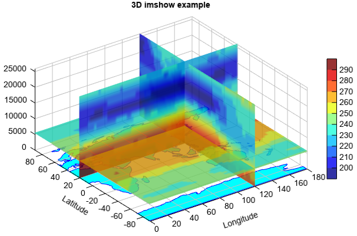

imshow 3D¶
-
Axes3DGL.imshow(*args, **kwargs): Display an image on the 3D axes.
- Parameters
x – (array_like) Optional. X coordinate array.
y – (array_like) Optional. Y coordinate array.
z – (array_like) 2-D or 3-D (RGB) z value array.
levs – (array_like) Optional. A list of floating point numbers indicating the level curves to draw, in increasing order.
cmap – (string) Color map string.
colors – (list) If None (default), the colormap specified by cmap will be used. If a string, like ‘r’ or ‘red’, all levels will be plotted in this color. If a tuple of matplotlib color args (string, float, rgb, etc), different levels will be plotted in different colors in the order specified.
- Returns
(RasterLayer) RasterLayer created from array data.
Example of 3D
imshowfn = 'D:/Temp/nc/air_clm.nc' f = addfile(fn) ps_x = f['aveair'][0,:,:,'120'] pres = ps_x.dimvalue(0) z = meteolib.pressure_to_height_std(pres) ps_x.setdimvalue(0, z) ps_y = f['aveair'][0,:,'20','0:180'] ps_y.setdimvalue(0, z) ps_z = f['aveair'][0,5,:,'0:180'] #Plot ax = axes3d() geoshow('continent', color='c', edgecolor='b') levs = arange(200, 300, 10) ls = imshow(ps_x, levs, offset=120, zdir='x', alpha=0.8) imshow(ps_y, levs, offset=20, zdir='y', alpha=0.8) imshow(ps_z, levs, offset=z[5], zdir='z', alpha=0.8) colorbar(ls) zlim(0, z[-1]) xlim(0, 180) xlabel('Longitude') ylabel('Latitude') title('3D imshow example')